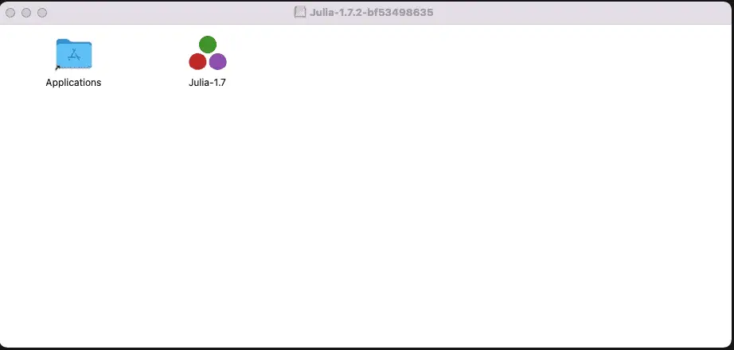
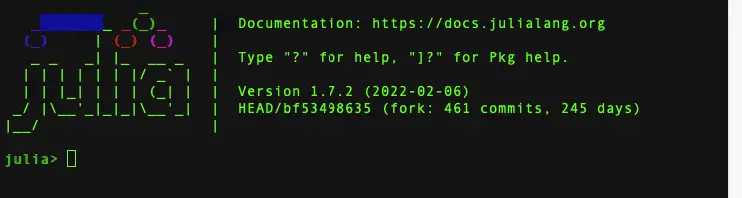
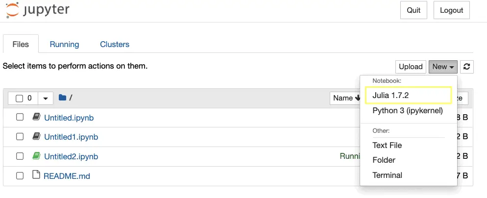
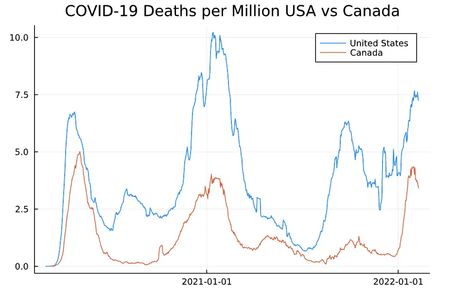

Is Julia Easy to Learn for Python Developers?¶
When I first took a look at Julia, I was wondering if it would be easy to learn and use it, coming from a background as a Python developer. I thought features like LISP-style macros might make it a difficult transition. It turns out it was easier than expected.
Julia has many features that are very similar to Python features, so this makes it easy to start programming Julia if you know some Python. Though there are differences between the two languages, where they differ, the Julia approach frequently makes things easier to learn and work with.
If you use Python for data science or machine learning, you may have heard of Julia. Though my own background is more along the lines of general software development, I’ve recently taken a first look at Julia and from what I can see so far, it’s really worth learning more about.
In this article, we’ll walk through the features of Julia that are easy to learn coming from a Python background as well as a few of the major differences. We’ll do this in the context of a beginner Julia project, doing some simple data analysis in Jupyter notebook using a Julia DataFrame.
Julia Easily Integrates With Jupyter Notebook¶
I found installing Julia to be quite straightforward in my environment. The installable packages are available here. For my environment, macOS ARM (M-series Processor), the release is listed as experimental, but I’m pleased to report that nothing untoward occurred in running the package, other than this:

As usual, I simply dragged Julia to the Applications folder, and it did the right thing. Launching Julia from as an application brought up a windowed terminal running with the Julia. To make things easier to work with in a terminal, I wrote the following shell script named julia and put it on my path:
/Applications/Julia-1.7.app/Contents/Resources/julia/bin/julia $@
For other environments, this site gives the platform-specific instructions.
With this in place, in a new terminal, running julia brought up the REPL:

Hello world in Julia looks exactly like it does in Python, so I probably tried that out next, but it wasn’t long before I wanted to run Julia in Jupyter notebook. To do that, I found a site that suggested how to do this using Anaconda, but I didn’t want to install the Internet to try this out, so instead I followed this procedure.
Once Julia is installed, the next step is to install the Julia kernel to integrate it with Python. Unlike in Python, packages can be managed inside the REPL, not separately. The following technique worked with the latest version of Julia and ensured that the kernel was visible from Jupyter. While still in the Julia REPL, run:
using Pkg
Pkg.update()
Pkg.add("IJulia")
# I needed this for Julia 1.7.2, but not for Julia 1.7.1 for some reason
Pkg.build("IJulia")
After a few seconds, the kernel will be installed. At this point, you can type “exit()” (or CTRL-D) to leave the Julia REPL, and we can set up a local environment with Jupyter installed, and run Jupyter in the usual way:
python -m venv .venv
source .venv/bin/activate
pip install jupyter
jupyter notebook
We should now see the Julia kernel as a selection in Jupyter Notebook.

Some of the first things I tried in my nifty new notebook were validating that I really was in Julia by checking the version.
VERSION
Output:
1.7.2
Yes, that’s as expected.
Julia List Comprehensions Work Like Python’s¶
a_list = [x for x in 1:10 if x % 2 == 0]
Output:
5-element Vector{Int64}: 2 4 6 8 10
One gotcha I ran into, however, was expecting the resulting Vector to be zero-based. Instead, by convention and consensus, arrays are one-based in Julia, so a_list[1] in the above equals 2, while a_list[0] just throws an exception.
I say by arrays are one based by convention and consensus because – although doing so lightly is a bad idea – one can actually implement arrays with arbitrary indexes in Julia. I don’t think you’ll catch me doing that anytime soon, though.
Julia Manages Packages and Environments Better¶
I mentioned earlier that Julia’s package manager can be run from inside the REPL. There’s actually a fair bit more that the package manager can do, so overall the landscape here looks much simpler than it is in Python. Without leaving the Julia REPL, for example, you can:
Create an isolated environment.
Install packages into it.
Install packages locally in development mode, so you can patch or do development on the packages locally as needed.
Add unregistered packages (i.e., add packages directly from Julia code on GitHub).
Let’s see how this works in action. Let’s save our Jupyter notebook for now, exit Jupyter, and run the Julia REPL again.
From that environment, we can activate a special prompt where we can interact with the package manager more directly. To do this, type a "]" (right-bracket character). This brings up a prompt, which in my case running 1.7.2 looks like this:
(@v1.7) pkg>
From this prompt, we can start to use a local environment (what we’d call a virtual environment in Python) quite simply:
activate .
At this point, we haven’t saved anything to disk, but we’ve told Julia to work with a local environment in the same directory as our Jupyter notebook. Let’s add some packages we’ll need:
add DataFrames CSV RemoteFiles
When these packages finish installing, you can exit the package prompt and then Julia with CTRL-C and exit().
Adding packages creates two files, Manifest.toml and Project.toml. Project.toml looks like this when we’re done:
[deps]
CSV = "336ed68f-0bac-5ca0-87d4-7b16caf5d00b"
DataFrames = "a93c6f00-e57d-5684-b7b6-d8193f3e46c0"
RemoteFiles = "cbe49d4c-5af1-5b60-bb70-0a60aa018e1b"
This gives us a high-level overview of what’s installed. The UUIDs after the name are not version specific, but vary depending on the package. Manifest.toml is much more detailed, so I won’t reproduce all of it here, but you can find out about versions and transitive dependencies there. For example, for CSV, we see:
[[deps.CSV]]
deps = ["CodecZlib", "Dates", "FilePathsBase", "InlineStrings", "Mmap", "Parsers", "PooledArrays", "SentinelArrays", "Tables", "Unicode", "WeakRefStrings"]
git-tree-sha1 = "9519274b50500b8029973d241d32cfbf0b127d97"
uuid = "336ed68f-0bac-5ca0-87d4-7b16caf5d00b"
version = "0.10.2"
Like Python, Julia Features DataFrames¶
Let’s go back into Jupyter notebook and create a new Julia Notebook. Julia and Jupyter should work out that there’s a local environment and use that for the notebook, but let’s just confirm. In a code cell, enter:
using Pkg
Pkg.status()
Output:
Status `~/source/CodeSolid/JuliaSandbox/Jupyter1/Project.toml`
[336ed68f] CSV v0.10.2
[a93c6f00] DataFrames v1.3.2
[cbe49d4c] RemoteFiles v0.4.2
Let’s see if we can load a DataFrame with some interesting data. Here in the United States, we might be interested in comparing our COVID-19 mortality to Canada, if only to see if moving to a colder climate might be worth it. First, let’s download the data:
using RemoteFiles
using CSV
using DataFrames
@RemoteFile(COVID_DATA, "https://covid.ourworldindata.org/data/owid-covid-data.csv", file="owid-covid-data.csv")
# Check whether the file has been downloaded
println(isfile(COVID_DATA))
# Get the path
FILE_PATH = path(COVID_DATA)
print(FILE_PATH)
You may see a message saying the file is being downloaded, but if you re-run the cell after a few seconds, you’ll see that the file exists and the path to load it:
True
<path>/data/owid-covid-data.csv
By the way, the @in @RemoteFile means we’re calling a macro rather than a function. Using a macro this way is easy, generally. We’ll forego a discussion of how to create them for now.
Now that we’ve downloaded the remote file, we can load it into a DataFrame fairly easily. This is why we saved the FILE_PATH constant.
df = DataFrame(CSV.File(FILE_PATH))
df
Output of the first few rows:
| iso_code | continent | location | date | total_cases | new_cases | new_cases_smoothed |
| String15 | String15? | String | Date | Float64? | Float64? | Float64? |
| AFG | Asia | Afghanistan | 2020-02-24 | 5 | 5 | missing |
| AFG | Asia | Afghanistan | 2020-02-25 | 5 | 0 | missing |
| AFG | Asia | Afghanistan | 2020-02-26 | 5 | 0 | missing |
| AFG | Asia | Afghanistan | 2020-02-27 | 5 | 0 | missing |
| AFG | Asia | Afghanistan | 2020-02-28 | 5 | 0 | missing |
| AFG | Asia | Afghanistan | 2020-02-29 | 5 | 0 | 0.714 |
Next, we can explore what column attributes are available using the names function. Because long arrays won’t be printed by default, we can iterate through the array as we might in Python. In Julia, the loop looks like this:
for name in names(df)
println(name);
end
Output:
iso_code
continent
location
date
total_cases
...
Subsets of Data in Julia Are Similar To Pandas¶
Without getting into the many options for taking subsets data in Julia DataFrames, here’s just one example where we get all the rows, as shown by the : as the first subset argument, and a small list of columns passed as a vector in the second argument.
df[:, [:continent, :location, :new_deaths_smoothed_per_million]]
Output of the first few rows:
| continent | location | new_deaths_smoothed_per_million |
| String15? | String | Float64? |
| Asia | Afghanistan | missing |
| Asia | Afghanistan | missing |
| Asia | Afghanistan | missing |
| Asia | Afghanistan | missing |
| Asia | Afghanistan | missing |
| Asia | Afghanistan | missing |
Julia Packages Can Be Added in Code¶
In Julia, it’s more obvious than in Python how to use the package manager in the REPL or in code. Of course, since pip is a python module, I suppose in principle one could load packages in Python code too, but I’ve never seen it done or learned how to do it. Working in the notebook, it occurred to me that I could load some packages I’d forgotten right inside the notebook.
Pkg.add("Query")
Pkg.add("Plots")
This turned out to be somewhat less useful than doing it inside the REPL, because during the build phase it looks like Jupyter might have cached some output until the end, and the Plots package took a fair amount of time to install and build. So I ended up going out to the REPL and finishing the process.
Moreover, even though you can do it while prototyping, having packages added inside the notebook is something you’ll want to remove before committing your project. In a later section, we’ll show how to start working with existing projects.
Julia’s Query Tool Simplifies Querying DataFrames¶
As you can see in the last section, we’ve started to think about how we can query and plot the data that we’ve loaded. The DataFrames documentation mentioned a couple of different tools for querying DataFrames easily. One of them, Query, is inspired by LINQ, C#’s library for querying and joining multiple data sources. I thought this would be a good tool to pick up, and it turned out to be quite easy to use, once you get past the difficulty in typing the Julia pipe operator: |>.
Before we hop into the Query package, however, let’s take a minute to work with the pipe operator a bit and to mention another difference between Julia and Python.
The pipe operator is tough to type, but easy to understand. All it does is take the output of the expression to the left of it, and uses it as input to the expression on the right. So in this respect, it functions similarly to the builder pattern, which allows for complex chains of object construction.
The pipe operator is useful where long chains of expressions need to be chained, as is the case for queries (think about the clauses of a SQL query, for example). For simpler cases it’s easier to use nested functions, but a simpler case is helpful to illustrate how it works.
Julia Slicing Ranges Differ from Python’s¶
Let’s take our old friend, “Hello, world”. We can slice a string in Julia as we might in Python, but in Julia, slices are one-based (as arrays are), and include the final index rather than excluding it. Thus, to get “Hello”, we want: “Hello, world”[1:5]. Without a pipe, making “Hello” uppercase is simply:
uppercase("Hello, world"[1:5])
Output:
"HELLO"
Converted to a pipe expression, the same operation looks like this:
"Hello, world"[1:5] |> uppercase
Output:
"HELLO"
Julia’s Query Package is Easy to Grasp¶
Now that we understand how Julia uses pipes, let’s see how we can query some data about total deaths per million people in Canada vs the United States.
using Query
# Narrow down to only the columns we need
df_column_subset = df[:, [:location, :new_deaths_smoothed_per_million, :date]]
# Drop missing data, select only the countries we want, order the results and save to a DataFrame
df_north_america = df_column_subset |>
@dropna(:new_deaths_smoothed_per_million) |>
@filter(_.location in(["United States", "Canada"])) |>
@orderby(_.date) |>
DataFrame
Output of the first few rows:
| location | new_deaths_smoothed_per_million | date |
| String | Float64 | Date |
| United States | 0 | 2020-02-29 |
| United States | 0 | 2020-03-01 |
| United States | 0.003 | 2020-03-02 |
| United States | 0.003 | 2020-03-03 |
| United States | 0.005 | 2020-03-04 |
| United States | 0.005 | 2020-03-05 |
| United States | 0.006 | 2020-03-06 |
| United States | 0.007 | 2020-03-07 |
| United States | 0.009 | 2020-03-08 |
| Canada | 0.004 | 2020-03-09 |
Most of this is query syntax is pretty easy to understand, but if you’re wondering why in the dropna case we use :column_name syntax but everywhere else we use _.column_name, you’re not the first to notice this inconsistency. Beyond that, we’re filtering the rows, sorting, etc., and saving the output to a new DataFrame with the name df_north_america. Before we plot this data, however, it will be helpful to transform it a bit.
Transforming Rows into Columns in Julia¶
Our DataFrame, df_north_america, has total deaths for both Canada and the United States as rows. But in order to plot those values, it’s easier to have them as columns. The next line does that for us, using the “location” label for the column and populating the total_deaths_per_million values for the US and Canada in those columns. We may decide later to worry about the missing values, depending on how the plot looks.
df_plottable = unstack(df_north_america, :location, :new_deaths_smoothed_per_million)
Output of the first few rows:
| date | United States | Canada |
| Date | Float64? | Float64? |
| 2020-02-29 | 0 | missing |
| 2020-03-01 | 0 | missing |
| 2020-03-02 | 0.003 | missing |
| 2020-03-03 | 0.003 | missing |
| 2020-03-04 | 0.005 | missing |
| 2020-03-05 | 0.005 | missing |
| 2020-03-06 | 0.006 | missing |
| 2020-03-07 | 0.007 | missing |
| 2020-03-08 | 0.009 | missing |
| 2020-03-09 | 0.007 | 0.004 |
| 2020-03-10 | 0.009 | 0.004 |
Plotting Data In Julia is Straightforward¶
Once we have a DataFrame in the format we want it, plotting the data is quite straightforward. We use the Plots package that we installed earlier. First, we extract two columns representing the smoothed value of new deaths per million population for the US and Canada. These will be our Y values. Our X values will simply be the dates. We pass the X values, followed by an array of our Y values. Finally, we pass in the labels to use for our Y values, and give our chart a grim title.
using Plots
us = df_plottable[!, "United States"]
ca = df_plottable[!, "Canada"]
x_values = df_plottable[!, :date]
plot(x_values, [us, ca], label = ["United States" "Canada"],
title="COVID-19 Deaths per Million USA vs Canada")
Here is our result:

COVID-19 Deaths US vs Canada
Wow, time to pack up my passport, eh?
Julia Is Faster Than Python¶
Although we’re meant to be discussing Julia from the point of view of how easy it is to learn given a background in Python, I do feel I must take a nod to the topic that every article brings up when comparing the two – the difference in performance.
Setting up benchmarks to compare the two involved making allowances for the differences between the most commonly used timing library in Python, the timeit module, and Julia’s built-in timing macro, @time. Because Julia’s macro didn’t seem to accommodate accumulations of successive runs like timeit, I instead went with a third-party package, Kristoffer Carlsson’s TimerOutputs. (This will need to be installed using one of the methods outlined above).
Here, we’re going to sum the numbers zero to 255 (inclusive), 1000 times
using TimerOutputs
function test_implicit_types(iterations)
to = TimerOutput()
for run in 1:iterations
@timeit to "sum" sum([x for x in 0:255])
end
return to
end
test_implicit_types(1000)
Output
──────────────────────────────
Time Allocations
──────────────────────────────
Tot / % measured: 557μs / 40.1% 2.08MiB / 99.8%
Section ncalls time %tot avg alloc %tot avg
──────────────────────────────
sum 1.00k 223μs 100.0% 223ns 2.08MiB 100.0% 2.12KiB
──────────────────────────────
If we can assume that timeit accumulates the time spent in the contents of each iteration, not on the execution of the loop itself, the relevant number for comparison in the above output is the 233 microseconds spent on the 1,000 calls to sum.
Now we execute the same code in Python for both NumPy and native Python. In the NumPy case, we even give Python the benefit of the doubt by excluding the NumPy array object construction from the loop, which also moves the list comprehension out.
To facilitate the comparison, we measure in microseconds here too.
from timeit import timeit
def display_time(message: str, result: float):
print(message)
print(f"\tTime in \u00B5s: {result * 1000000}, in ms: {result * 1000}")
result = timeit("sum([x for x in range(0,256)])", number=1000)
display_time("Python for Julia-comparable case", result)
result = timeit("the_list.sum()",
setup="import numpy as np; the_list = np.array([x for x in range(0,256)])", number=1000)
display_time("NumPy (best case)", result)
Output:
Python for Julia-comparable case
Time in µs: 12535.66699961084, in ms: 12.53566699961084
NumPy (best case)
Time in µs: 883.5419976094272, in ms: 0.8835419976094272
If you want to try this on different machines, I’ll include a link to the code, but on my M1 apple processor, the results are looking much better for Julia. The best case (with a leg-up) effort for NumPy is about four times slower than Julia. The native Python case – at least in this test – takes fifty-six times as long to run as the native Julia code!
My things to-do list as of now?
Move to Canada to improve my pandemic chances.
Launch a Julia blog.
Julia From Python Can Be Done Incrementally¶
Coming from a background in Python and other languages, I did not find Julia too hard to learn. To be sure, there are some differences between the two, and I’ve pointed out some of these as we’ve gone along.
There are other differences that are even more fundamental that we haven’t covered in this article. For example, although it has a rich type system, Julia does not support bundling methods and custom data types together as Python does. In this respect, it more closely resembles Golang than Python. On the other hand, one of Julia’s coolest features, multiple dispatch, means it’s possible to define heavily overloaded functions that can be crafted to be precisely selected based on the runtime type of the arguments passed. Because of this, selecting behavior based on the type of object bound to the method is not really necessary in Julia.
Overall, however, I was not so much impressed by how much Julia differs from Python as by how much they overlap. I tried using an “in” on an array, for example, and it just worked. I haven’t touched Pandas in a while, yet I was able to write this article only a week after beginning to read about Julia. The approach I used was simply to take the language as it is and find good examples from which to work. Doing that, my impression was that Julia was easy to learn, coming from Python.
This side trip to Julia was great fun for me. The main disadvantage to the language that I see is the practical consideration that even though Julia may be an order of magnitude faster, Python is an order of magnitude more popular. It will be interesting indeed to see how this all plays out going forward.